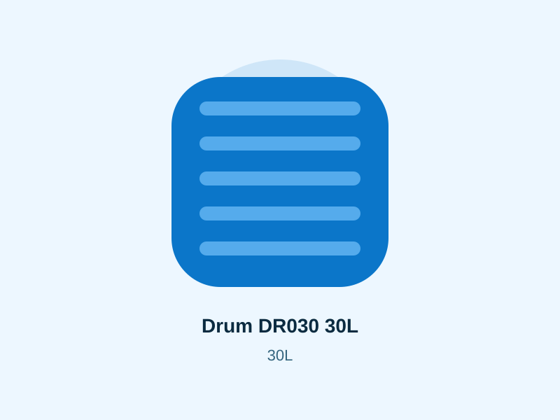
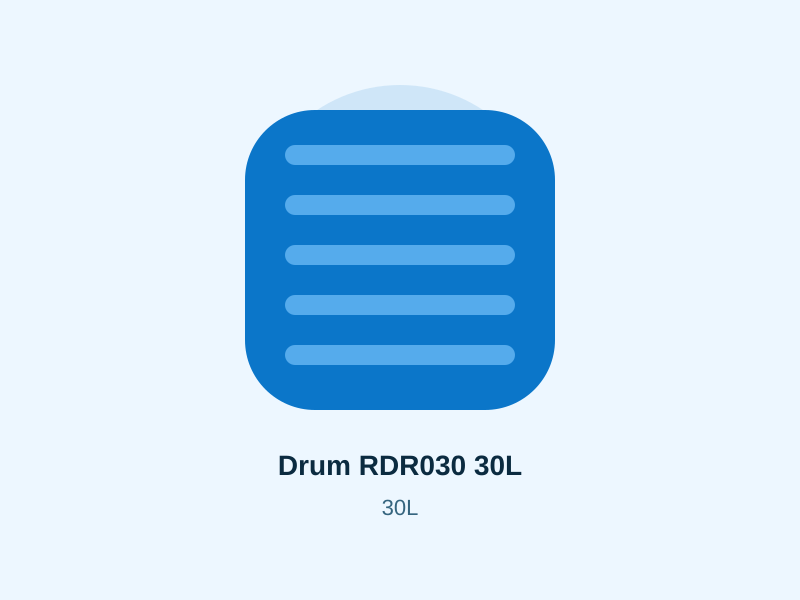
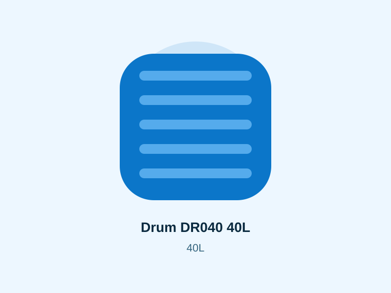
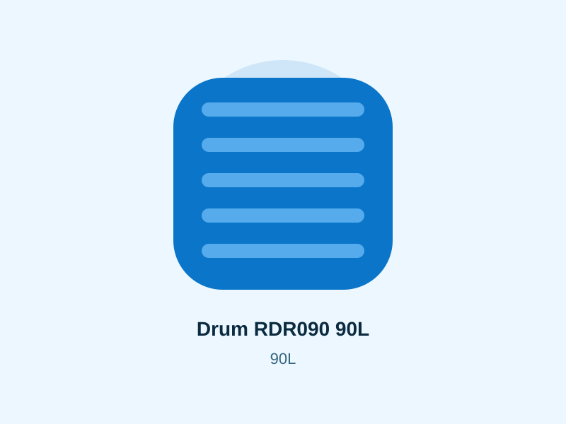
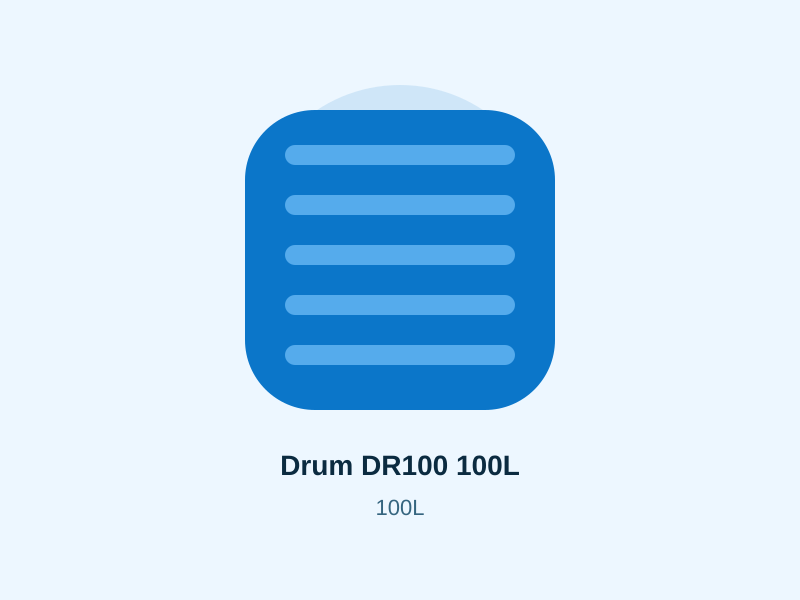

Kenya product category
Plastic Drums Kenya
Compare products, indicative prices and practical selection guidance before requesting a current quotation.




Prices and availability require confirmation.
Choosing drum capacity
The catalogue includes 30L, 40L, 90L and 100L drum options. Match the capacity to the material being stored, how often the container moves and the available lifting or handling method.
Use-specific suitability
Do not assume every plastic drum suits every liquid or material. Confirm manufacturer guidance for the substance you plan to store, especially for food, chemicals or other sensitive uses.
Handling and storage
Smaller drums are easier to move manually, while larger filled containers become heavy. Use stable surfaces, avoid damage from sharp objects and keep closures secure where applicable.
Buying questions
Ask about current stock, lid or closure configuration, exact dimensions, intended-use guidance and delivery cost for your quantity and location.
Filled weight matters
A 100L drum filled with water holds about 100 kilograms of water. Other liquids may weigh more or less. Plan lifting and movement around the filled weight rather than the empty container. Use trolleys or mechanical handling where manual movement would be unsafe.
Label stored materials
Where several drums are used, clear labels reduce mix-ups. Do not reuse a drum for food or drinking water if its previous contents or cleaning history make that unsafe. Confirm product suitability for the intended material.
Quantity purchasing
Businesses buying several drums should request unit price, stock, closure type, product code and delivery cost in one quotation. This makes comparison easier than asking only for a single retail price.
Related help
Check delivery to your town · Browse all Roto tank sizes and prices · Read tank buying FAQs